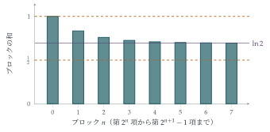

STEP III 2014、第8問
先に進む前に問題を読んでおこう。問題は STEP Support Programme の問題データベースにある： step.maths.org/questions/14-s3-q8
導入
調和級数（harmonic series）\(1 + \frac12 + \frac13 + \frac14 + \cdots\) は、各項が \(0\) に近づくにもかかわらず和は限りなく大きくなる級数の、最も有名な例である。その増え方はおそろしく遅い。\(10\) を超えるには \(12{,}000\) 項以上が必要であり、\(100\) を超えるにはおよそ \(1.5 \times 10^{43}\) 項が必要である。それでも、いずれはどんな数も超えていく。
では、分母に数字 \(2\) を含む項をすべて取り除いてみよう。\(\frac12\)、\(\frac1{12}\)、\(\frac1{20}\) から \(\frac1{29}\) まで、\(\frac1{32}\) などが消える。もともと無限大になる和なのだから、項の1割ほどを取り除いても大差はないと予想するかもしれない。ところが実際には、残った項の和は \(80\) 未満になるのである。この驚くべき事実は 1914 年に A. J. Kempner によって証明された。この問題は、和をブロックに切り分けるという、たった一つの見事に単純なアイデアでそこへ導いてくれる。
取りかかる前に
最初の不等式は、\(r = k^n\) から \(r = k^{n+1} - 1\) までの項からなるブロックについてのものである。\(k = 2\)、\(n = 3\) のとき、それはどの項で、何個あるか。
それは \(f(8), f(9), \ldots, f(15)\) の8項である。一般に、ブロックは \(k^n\) から \(k^{n+1} - 1\) までなので、項の個数は \(k^{n+1} - k^n = k^n(k-1)\) である。この不等式は、ブロックの和が（項の個数）\(\times\)（とりうる最小の項）と（項の個数）\(\times\)（最大の項）の間にあることを述べている。
順を追って解く
段階 1 ブロックを評価する
\(f\) は減少関数（decreasing function）なので、ブロック内のすべての項は \[f(k^{n+1}) < f(k^{n+1} - 1) \leq f(r) \leq f(k^n) \qquad (k^n \leq r \leq k^{n+1} - 1)\] を満たす。\(k^n(k-1)\) 個の項を足し合わせれば、求める不等式が得られる。■
段階 2 調和級数
\(k = 2\)、\(f(r) = 1/r\) のとき、\(2^n\) から \(2^{n+1} - 1\) までのブロックに対する二つの評価はどうなるか。
下からの評価は \(2^n \cdot \frac{1}{2^{n+1}} = \frac12\)、上からの評価は \(2^n \cdot \frac{1}{2^n} = 1\) である。したがって、どれほど先のブロックであっても、すべてのブロックは \(\frac12\) 以上 \(1\) 以下の寄与をする（図 2.3.1）。\(n = 0, 1, \ldots, N\) のブロックはちょうどつながって \(r = 1\) から \(r = 2^{N+1} - 1\) までの和になるので、\(N + 1\) 個のブロックを足し合わせると \[\frac{N+1}{2} \leq \sum_{r=1}^{2^{N+1}-1} \frac1r \leq N + 1\] を得る。\(N \to \infty\) のとき左辺は限りなく大きくなるので、部分和（partial sum）は有界でなく、級数は発散（diverge）する。■

段階 3 立方数の逆数の和
次に、\(k = 2\) のまま \(f(r) = 1/r^3\) とする。ブロック \(n\) に対する上からの評価は \[2^n \cdot \frac{1}{(2^n)^3} = \frac{1}{4^n}\] である。\(n = 0, 1, 2, \ldots\) のブロックはすべての正の整数をちょうど1回ずつ覆うので、 \[\sum_{r=1}^{\infty} \frac{1}{r^3} \leq \sum_{n=0}^{\infty} \frac{1}{4^n} = \frac{1}{1 - \frac14} = \frac43 = 1\tfrac13. \qed\] （厳密には、これはすべての部分和が \(\frac43\) 以下であることを示している。上に有界な単調増加数列は収束（converge）するので、無限和は存在し、その値は \(\frac43\) 以下である。真の値は \(1.2020\ldots\) である。）
段階 4 2 を含まない数を数える
先頭の \(0\) を許す（たとえば \(7\) を \(007\) と書く）とき、\(0\) から \(999\) までの整数のうち、数字 \(0, 1, 3, 4, 5, 6, 7, 8, 9\) だけを使って書けるものはいくつあるか。
3つの桁それぞれに \(9\) 通りの選び方があるので、そのような文字列は \(9^3\) 個ある。これらは \(0\) から \(999\) までの \(2\) を含まない数とちょうど対応しており、（正でない）\(0\) を除くと、\(S(1000)\) には \(9^3 - 1 = 728\) 個の数が残る。■
段階 5 Kempner の級数
ここで、ブロックの考え方を桁数で定めたブロックに適用する。これは \(k = 10\) とするのと同じことである。
\(2\) を含まない \(d\) 桁の数はいくつあるか。また、\(d\) 桁の数の最小値はいくつか。
最上位の桁は \(1, 3, 4, \ldots, 9\) のいずれか（\(0\) でも \(2\) でもない8通り）であり、残りの \(d - 1\) 個の桁はそれぞれ9通りである。よってそのような数は \(8 \times 9^{d-1}\) 個あり、いずれも \(10^{d-1}\) 以上である。したがって、\(S(n)\) に属する \(d\) 桁の数が \(\sigma(n)\) に寄与する量は高々 \[8 \times 9^{d-1} \times \frac{1}{10^{d-1}} = 8 \left( \frac{9}{10} \right)^{d-1}\] である。すべての桁数 \(d = 1, 2, 3, \ldots\) について足し合わせると、 \[\sigma(n) \leq \sum_{d=1}^{\infty} 8 \left( \frac{9}{10} \right)^{d-1} = \frac{8}{1 - \frac{9}{10}} = 80.\] 真の不等号については、ほとんどの評価がまったく精密でないことに注意すればよい（たとえば \(\frac13 < 1\) であるのに、1桁の項はすべて \(1\) で評価している）。よって、すべての \(n\) について \(\sigma(n) < 80\) である。■
振り返り
項をまとめる。どちらの和も、1項ずつ扱うのは容易でない。適切な大きさのブロックにまとめることで、それぞれを等比級数（geometric series）と比較できた。
適切なブロックは問題によって異なる。\(1/r\) と \(1/r^3\) には \(2\) の累乗が、10進法の数字に関する問題には \(10\) の累乗が適していた。
有界かつ単調増加。どちらの収束の証明も、第 2.2 節 と同じ原理に基づいている。正の項の部分和は単調増加するので、上からの評価さえあればよいのである。
背後にある数学
この問題の最初の不等式は、コーシー（Cauchy）の凝縮判定法（condensation test）の核心である。\(f\) が正で減少関数ならば、 \[\sum_{r=1}^{\infty} f(r) \text{ が収束する} \iff \sum_{n=0}^{\infty} 2^n f(2^n) \text{ が収束する。}\] この判定法は、難しい級数を易しい級数に変えてくれる。\(f(r) = 1/r^p\) に適用すると \(\sum 2^n \cdot 2^{-np} = \sum (2^{1-p})^n\) となり、これは \(p > 1\) のときに限り収束する等比級数である。\(1/(r \ln r)\) に適用すればこれさえも発散することがわかり、\(1/(r (\ln r)^2)\) に適用すればこちらは収束することがわかる。この議論はニコル・オレーム（Nicole Oresme）にさかのぼる。オレームは 1350 年ごろ、まさに図 2.3.1 のブロックを用いて調和級数の発散を証明した。
調和級数はどれほどゆっくり発散するか
図 2.3.1 からは、各ブロックがおよそ \(\ln 2\) ずつ寄与することがうかがえる。したがって、最初の \(N\) 項の和はおよそ \(\log_2 N \times \ln 2 = \ln N\) になるはずである。実際、 \[1 + \frac12 + \cdots + \frac1N = \ln N + \gamma + \text{（$0$ に収束する項）}\] が成り立つ。ここで \(\gamma = 0.5772\ldots\) はオイラー・マスケローニ定数（Euler–Mascheroni constant）である。\(\gamma\) が有理数（rational number）かどうかは誰にもわかっていない。この公式は大学1年次の解析学で積分を用いて証明することになる。また、調和数は 第 9.11 節 と 第 11.12 節 にも再び登場する。
ほとんどの数は 2 を含む
なぜ Kempner の級数は収束するのだろうか。それは、大きな数の中では「2 を含まない数」が非常にまれだからである。\(10^d\) 未満の数のうち \(2\) を含まないものの割合は高々 \((0.9)^d\) であり、これは \(0\) に収束する。\(100\) 桁の数のうち、数字 \(2\) を含まないものは \(0.003\%\) にも満たない。つまり、取り除いているのは項の1割ではなく、ほとんどすべてなのである。\(80\) という評価はかなり甘い。1979 年、Robert Baillie は加速法を用いてこの和を小数点以下何桁にもわたって計算し、その値はおよそ \(19.257\) であることを示した。
累乗の逆数の和
小問 (ii) の和は \(\zeta(3)\) であり、これは 第 1.2 節 で出会ったリーマン（Riemann）ゼータ関数（zeta function）の値である。第 2.4 節 では \(\zeta(2) = \pi^2/6\) を正確に求めることになるし、オイラー（Euler）は \(\zeta(4), \zeta(6), \ldots\) の公式を見つけた。しかし、\(\zeta(3)\) の公式は誰にも見つかっていない。1978 年、Roger Apéry は 第 2.9 節 のものとよく似た積分を用いて \(\zeta(3)\) が無理数（irrational number）であることを証明し、数学界を驚かせた。\(\zeta(5)\) が無理数かどうかは今なおわかっていない。
思考のスキル
正の項からなる級数が収束するかどうかを判定するには、項がほぼ一定とみなせるブロックにまとめ、各ブロックを単純な級数と比較せよ。
比較判定法（comparison test）は大学1年次の解析学の基本中の基本である。スキルの要は、何と比較するかを選ぶことにある。ここでは、項の変化が一定の倍率以内に収まる、大きさ \(2^n\) や \(10^d\) のブロックを用いた。
次の一歩
遅さを実感する。\(\sum_{r \leq N} 1/r \approx \ln N + 0.5772\) を用いて、調和級数が \(10\) を超えるのに何項必要か、また \(100\) を超えるのに何項必要かを見積もれ。
判定法を使ってみる。小問 (i) の方法を \(f(r) = 1/r^2\) に用いて、\(\sum 1/r^2 \leq 2\) を示せ。さらに、第1項を別に扱うことで評価を改善せよ。
収束と発散の境目。\(k = 2\) のブロック不等式を用いて、\(\sum_{r \geq 2} \dfrac{1}{r \ln r}\) が発散し、\(\sum_{r \geq 2} \dfrac{1}{r (\ln r)^2}\) が収束することを示せ。
さらに除外する。 発展 10進法で表したときに \(2\) も \(7\) も含まない正の整数の逆数の和は \(35\) 未満であることを示せ。（\(35\) がどこから来るかわかるだろうか。）
さらに学ぶために
Julian Havil, Gamma: Exploring Euler’s Constant（Princeton University Press）。『ガンマ：オイラーの定数を探る』。調和級数、\(\gamma\) をはじめ多くの話題を、力のある高校生向けに書いた本である。
Mary Hart, Guide to Analysis（Palgrave）。『解析学ガイド』。級数と比較判定法についてのわかりやすい章を含む、簡潔な大学1年次向けの教科書である。
Robert Baillie, 「Sums of reciprocals of integers missing a given digit」, American Mathematical Monthly 86 (1979)。「特定の数字を含まない整数の逆数の和」。この節を読み終えた後なら読める短い論文である。